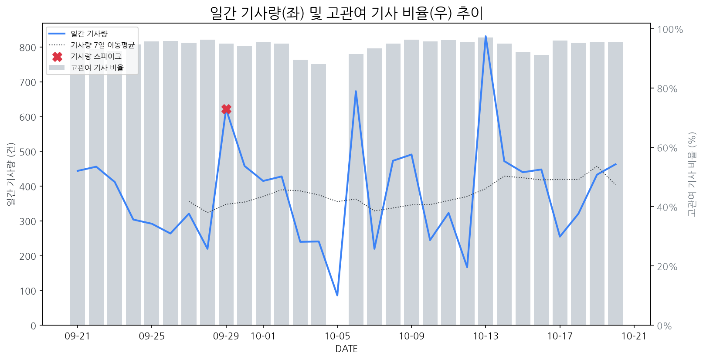

1
시장 활동 지표
기사량 추세 & 이상 징후 탐지
시장의 '전체 기사량'이 평소보다 비정상적으로 급증했는지(Spike)를 차트로 확인하고, LLM이 분석한 급등의 핵심 원인을 파악할 수 있음

고관여 기사란? 산업 연관 키워드로 수집된 기사들 중 디스플레이 키워드에 가중치를 반영하여 도출된 관련성 높은 기사
수집된 기사 수 (2026-10-20)
463
-44% WoW
기사량 변동 수준 (7일 이동평균 대비)
±6.7% 이하
2
오늘의 키워드
급격한 관심 ↑, 주목해야 할 키워드
1
양산
+4.3σ
SK머티리얼즈제이엔씨와 SN디스플레이의 페로브스카이트 소재 양산 협력이 핵심 원인입니다.
Related Metrics
금일 언급량: 14, 전일 대비: +12
Interpretation
신소재 양산화 기대감 고조
Next Step
'양산' 관련 상세 기사 및 경쟁사 반응 모니터링
2
디스플레이
+2.2σ
SK머티리얼즈가 SN디스플레이와 협력하여 차세대 디스플레이 소재 양산에 나서는 것이 핵심 동력입니다.
Related Metrics
금일 언급량: 15, 전일 대비: +6
Interpretation
차세대 소재 기술 확보 경쟁
Next Step
'디스플레이' 관련 상세 기사 및 경쟁사 반응 모니터링
3
갤럭시
+1.9σ
폴더블폰 수리비 및 유지비 경쟁 심화 속 갤럭시 신제품(Z폴드8)에 대한 관심 증가
Related Metrics
금일 언급량: 9, 전일 대비: +5
Interpretation
폴더블 패널 수요 증가 기대
Next Step
'갤럭시' 관련 상세 기사 및 경쟁사 반응 모니터링
3
실시간 Risk 키워드
경계해야 할 시그널 탐지
특정 토픽의 부정 감성 점수가 급등할 때 이를 즉시 탐지하고, "근거 기사" 링크를 통해 리스크의 실체를 빠르게 파악할 수 있음
키워드 분석 결과, 오늘은 걱정할 만한 하락 신호가 없습니다. (부정 언급량 변화: +1.5σ 이내)
4
주요 이벤트 모니터링
실시간 산업 동향 파악을 위한 주요 활동
최근 발생한 주요 기업들의 신제품 출시, 투자 등 주요 이벤트를 제공하여 매일 경쟁사 동향을 확인할 수 있음
현대차와 기아가 레벨4 수준의 자율주행 트럭 실증 운행을 시작했습니다. 이는 향후 물류 및 운송 산업의 혁신을 가속화할 것으로 예상됩니다.
Impact
자율주행 트럭의 상용화는 차량 내 디스플레이를 단순한 정보 제공 기능을 넘어 고도의 센서 정보 통합, 사용자 인터페이스, 엔터테인먼트 기능까지 포함하는 복잡하고 고성능화된 디스플레이 시스템에 대한 수요를 증대시킬 것입니다.
Next Step
디스플레이 제조 기업은 자율주행 환경에 최적화된 고내구성, 넓은 시야각, 강한 햇빛 아래에서도 뛰어난 가독성을 제공하며, 다양한 센서 정보와 인터페이스를 통합할 수 있는 차세대 디스플레이 기술 개발 및 파트너십 구축을 검토해야 합니다.
삼성디스플레이 사장이 과거 LCD 시장의 어려움을 반복하지 않겠다는 의지를 밝히며 OLED 사업 강화에 집중하고 있습니다. 이는 OLED 기술 리더십을 지키고 시장 지배력을 유지하려는 전략적 방어전입니다.
Impact
이번 선언은 OLED 기술 투자 및 개발 경쟁을 가속화시키고, 관련 부품 및 소재 산업 생태계에도 긍정적인 영향을 미칠 것으로 예상됩니다.
Next Step
경쟁사의 OLED 기술 추격을 따돌리기 위한 차세대 OLED 기술 개발 및 원가 경쟁력 확보에 집중해야 합니다.
기존 OLED 제조 방식의 핵심 공정인 FMM(Fine Metal Mask)이 기술적 한계에 부딪히면서, FMM-less 방식이 대안으로 떠오르고 있습니다. 이는 OLED 디스플레이 대중화를 위한 핵심 퍼즐로 주목받고 있습니다.
Impact
FMM-less OLED 기술의 상용화는 OLED 패널 생산 효율성을 높이고 비용을 절감하여 OLED TV, 스마트폰 및 IT 기기 등 전방 산업에서의 OLED 채택을 더욱 가속화할 것으로 예상됩니다.
Next Step
OLED 제조 기업은 FMM-less 기술 개발 및 투자 확대, 관련 특허 확보, 그리고 협력사와의 기술 제휴를 통해 시장 주도권을 확보해야 합니다.
서피스 랩톱 울트라가 막대한 AI 성능을 자랑하며 출시되었으나, 높은 가격으로 인해 시장 경쟁력에 대한 의문이 제기되고 있습니다. 이 제품은 최신 AI 기술을 활용한 혁신적인 기능을 강조하고 있습니다.
Impact
AI 성능 강화 노트북 시장의 성장을 촉진할 수 있으나, 고가 정책은 프리미엄 디스플레이 기술 채택의 속도를 늦출 가능성이 있습니다.
Next Step
AI 연산 성능 향상에 필수적인 고성능 디스플레이 기술 개발 및 차별화 전략 강화로 시장 수요 변화에 대비해야 합니다.
애플이 1월 28일 신제품 공개 행사를 개최하며, 업계에서는 터치스크린 기능이 탑재된 맥북 출시 가능성을 제기하고 있습니다.
Impact
맥북에 터치스크린 기술이 도입될 경우, 관련 디스플레이 패널 수요 증가 및 기술 경쟁 심화가 예상됩니다.
Next Step
디스플레이 제조 기업은 애플의 터치스크린 기술 사양을 파악하고, 관련 부품 공급 역량을 강화하는 방안을 검토해야 합니다.